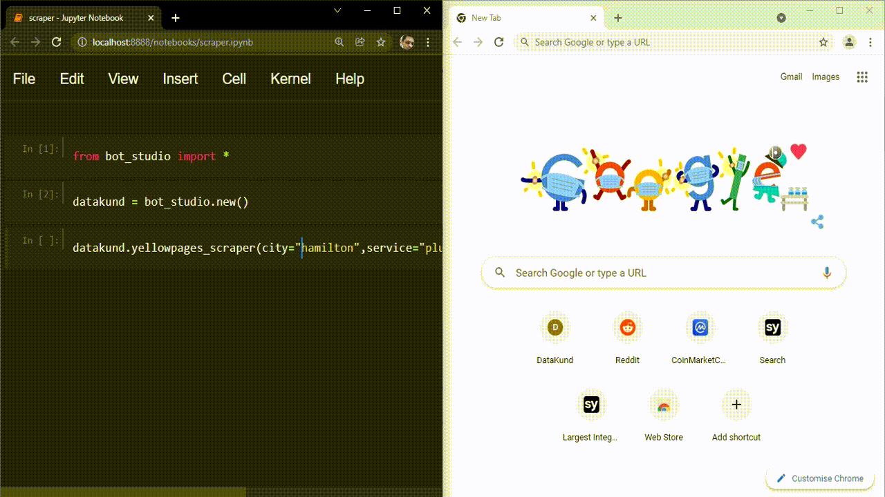
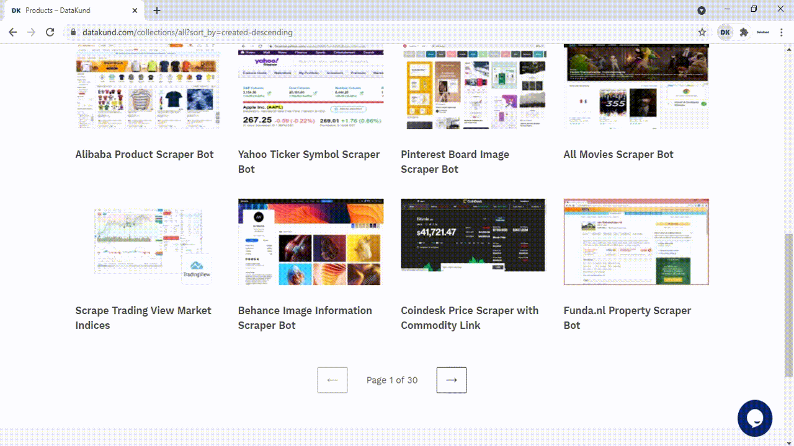
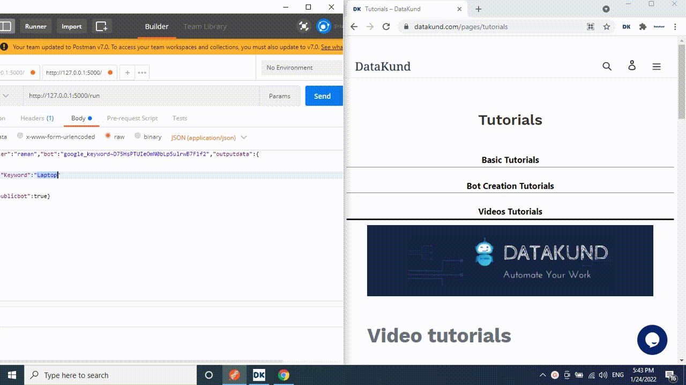

DataKund - Automate Browsers without Selenium scripting
DataKund is a powerful Record & Play tool
Make robots to automate fairly complex tasks by simply recording your tasks in the browser
Lets see a few examples
Yellow Pages Scraper run from Jupyter
Social Media Posting Bot
Google Search Bot run from Postman
Automate Web Apps testing
- Automate Repetitive tasks eg.
- Scrape Websites eg.
DataKund handles all Selenium scripting underneath
Access all the Bots/APIs from within your code with a single function call
Selenium vs DataKund
| Features | Selenium | DataKund |
| Coding experience | Required | Not Required |
| Customer Support | Open-source Community | Dedicated support |
| API Support | Cannot perform actions through apis | Can call apis |
| Maintenance | slight change in website can make the code fail | don't fail with slight changes in website |
| Inspection of Elements | Need to inspect elements to write code | it records itself |
| Time | takes time in writing code | takes no time in making apis |
| Dependencies | Depends on driver,selenium module and programming language | No programming language or driver needed |
| Locators knowledge | knowledge of locators such as id, class etc needed | no such knowledge needed |
Contents: